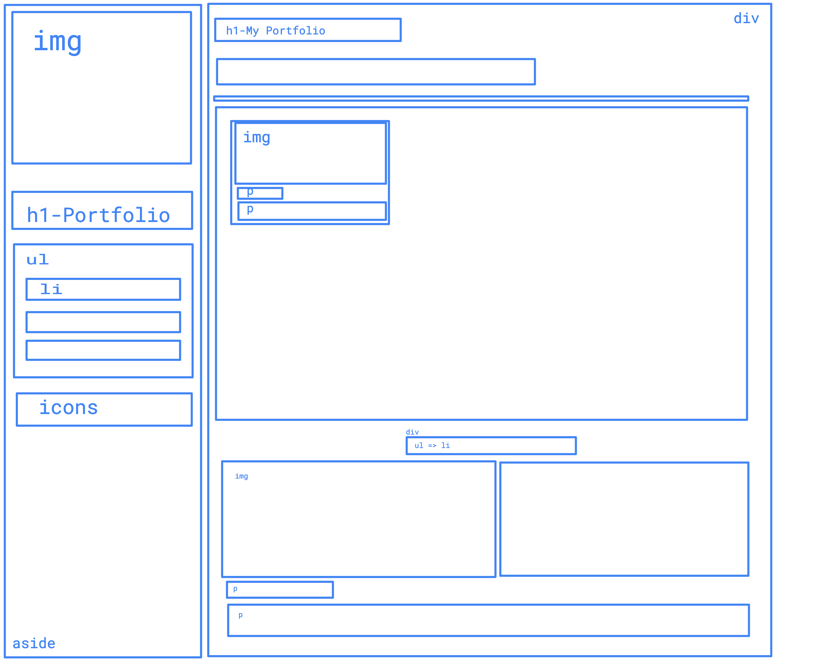

Portfolio Project

Final Result

Steps
- 1 - Separate a page into main sections
- 2 - Decide what html elements to use
- 3 - Decide how to style
- 4 - Check if any flaws in a design/css
- 5 - Implement/code
- 6 - Improve your code
- 7 - Apply 1-6 steps into sub sections
For each section:
- Come up with options
- Discuss pros/cons of options
- Decide the proper one
1 - Separate a page into main sections
What are the options?
My choice is:
2 - Decide what html elements to use
What are the options?
Options:
- div?
- aside, section, main?
- etc?
My choice is:
3 - Decide how to style
What are the options?
Options:
- display: inline-block?
- float?
- position?
My choice is:
My choice:
float:left
If total width needs to be exact 100%, usually i use float.4 - Check if any flaws in a design/css
Does "float" need a "clear"?
My answer is:
My answer:
Since we don't have a footer we don't need to clear anything
5 - Implement/code with your instructor
6 - Improve a code with your instructor
Your instructor pushes the code into github then
Implement 1-6 steps into sub sections with your team/sister team
Questions?
You can see my choices on the next pages.